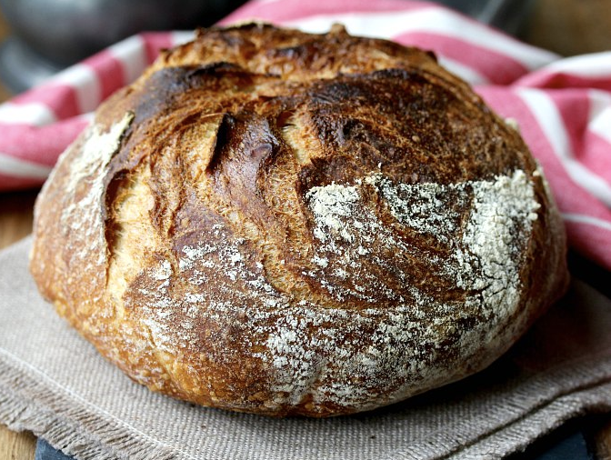

Overnight White Bread
Ingredients
- 1000g unbleached all purpose flour
- 780g water, 90 to 95 degrees F
- 22g salt (not iodized)
- 0.8g instant yeast (1/4 tsp)
Instructions
- With your hand, mix the flour and the water in the Cambro bucket or a very large bowl. Cover and let rest
for 30
minutes.
- Sprinkle the salt and the yeast over the dough, and, with a wet hand, fold the "sides" of the dough over the
salt and
yeast, and then pinch the dough a few times to incorporate. Stretch and fold the dough from all four sides,
and then
pinch the dough a few more times. Finish with a final set of stretch-and-folds. Cover and let sit for 30
minutes.
- Do three more stretch-and-folds, every 30 minutes, covering the dough each time. After the final time, cover
the dough
and let it rest at room temperature overnight. The dough should have nearly tripled in size and be quite
bubbly on top.
- Generously flour two proofing baskets or towel lined bowls with flour. I use a 50/50 mixture of wheat and
rice flour to
prevent sticking.
- With a wet hand or a wet dough scraper, gently scrape the dough out on to a lightly floured work surface.
Divide the
dough in half with a bench scraper. Gently shape each dough piece into a ball, and let it rest on the work
surface, seam
side down for 10 to 15 minutes.
- After the bench rest, using your bench knife and hands, tighten up the shape of the dough ball by gently
sliding the
ball along the counter from all sides to create a taut skin. Place the dough, seam side down (see note
above) in the
baskets/towel lined bowls, and cover with oiled plastic wrap. About 45 minutes before baking, heat your oven
to 475
degrees F with two Dutch ovens in the oven. If you only have one pan, you can bake the loaves one at a time.
- Let rise for 60 to 80 minutes, until it slowly springs back when poked with your finger, but not all of the
way.
- Remove the Dutch ovens from the oven and remove the tops. One loaf at a time, place a piece of parchment
over the dough,
and invert a dinner plate over the parchment. Flip the dough over, remove the basket/bowl, and place the
dough in the
Dutch oven using the parchment paper as a sling (leave the paper under the dough). Cover the loaf with the
top of the
Dutch oven, and place it in the oven. Repeat with the second loaf.
- Bake covered for 30 minutes. Remove the Dutch ovens from the hot oven and place the loaves onto a sheet pan
and return
them to the oven, being careful not to burn yourself. Bake for 15 to 25 minutes more, until a deep golden
brown, and the
internal temperature reaches 210 degrees F. Cool completely (at least an hour) on a wire rack.